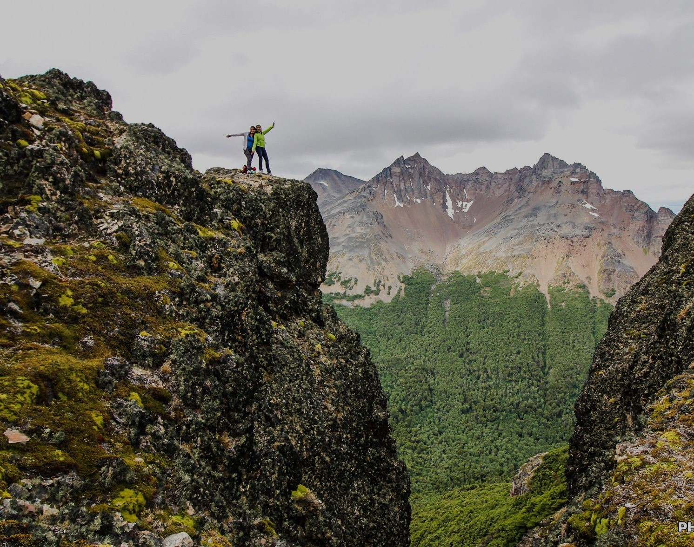
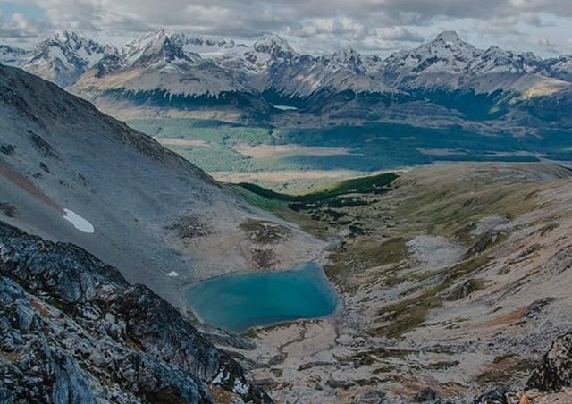
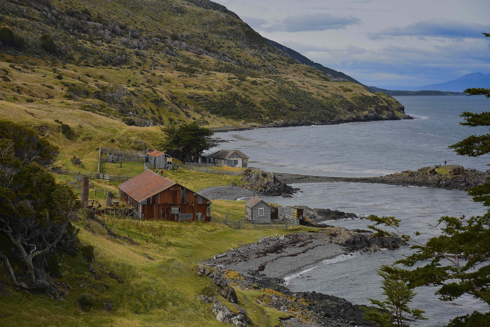

Excursiones
Glaciar Martial

Laguna Esmeralda

Cascada Velo de la novia

Cerro Cortez
Laguna Cinco Hermanos

Laguna Turquesa
Estancia Túnel
Laguna del caminante

Elija su caminata
Blog
Glaciar Martial
Visita al Glaciar Martial, a solo 600m sobre el nivel del mar. La subida hasta el aparcamiento se suele hacer en coche, taxi y la bajada se puede hacer andando por aquello de que se va con el tiempo justo. Una vez en el parking...
Leer másLaguna Esmeralda
El trek esta a 2 kilómetros de la entrada de ushuaia. El camino esta todo marcado es imposible perderse. Es una caminata hermosa para hacer en familia y con niños. Haciendola tranqui podes tardar 2 horas en llegar a la laguna....
Leer más
Cascada Velo de la novia
Caminata corta en las proximidades de ushuaia. Se inicia atravesando el Río Olivia por un amplio puente colgante. Luego la senda continua a través del bosque hasta llegar al primer mirador de la cascada donde pueden verse los saltos...
Leer másEstancia Túnel
El sendero comienza al final del camino de Playa Larga, donde encontramos la Baliza Escarpados. Desde aquí transcurre entre el bosque y el Canal de Beagle donde podemos apreciar toda su belleza. A mitad de camino encontramos...
Leer más